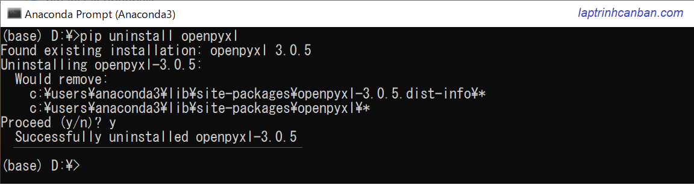

記事掲載：https://laptrinhcanban.com/ja
Python で Excel ファイルを処理する方法について説明します。このレッスンの後、 openpyxl をインストールし、このモジュールを使用して Python で Excel ファイルを読み込み、Python で Excel ファイルからデータを抽出する方法を学習します。
- 関連記事: Python で Excel ファイルにデータを書き込む.
Pythonにopenpyxlをインストールする方法
pip install openpyxl で openpyxl をインストールします。
Python で Excel ファイル処理を実行するには、次のように、Anaconda プロンプト画面でpipを使用してコンピューターに openpyxl モジュールをインストールする必要があります
pip install openpyxl

インストールされているopenpyxlのバージョンは、上の画像の赤枠部分のように確認できます。openpyxl をインストールすると、openpyxl を使用して Python で Excel ファイル処理を実行できます。
このモジュールをもう使用したくない場合は 、次のようにpipを使用してコンピューターから openpyxl を削除することもできます。
pip uninstall openpyxl

openpyxlモジュールで Excel ファイルの処理をサポートするクラス
Excel ファイルを処理するために、openpyxl モジュールは次の 3 つのクラスを統合します。
| クラス名 | 定義 |
|---|---|
| Workbook | すべてのエクセルファイル |
| Worksheet | Excel ファイルのシート |
| Cell | シート内のセル |
各クラスでは、Python で Excel ファイルを処理するのに役立つさまざまなメソッドをサポートします。
PythonでExcelファイルを読み込む | openpyxl
PythonでExcelファイル全体を読み込む
次の内容Excel ファイルがあるとします。

この exel ファイルを処理するには、まず openpyxl をプログラムにインポートする必要があります。さらに、結果を画面に表示して見やすくするには、次のように pprint モジュールをインポートしてください。
import openpyxl |
次に、次のようにopenpyxl.load_workbook()を使用して、Excel ファイル全体を含むWorkbook クラスのオブジェクトを作成します。
wb = openpyxl.load_workbook('./user/sample.xlsx') |
ワークブック オブジェクトを作成した後、ワークブック クラスの組み込みメソッドを使用して、そのオブジェクトで Excel ファイルを処理できます。たとえば、Excel でシート名全体を取得できます。
print(wb.sheetnames) |
PythonでExcelファイルのシートを読み込む
Excel ファイルのシートを処理するには、次のようにシート名を指定して、読み込むシートの内容を含むワークシート クラスのオブジェクトを作成します。
sheet = wb['Sheet1'] |
ワークシート オブジェクトを作成した後、次のようにセルの内容を含むcell クラスのオブジェクトを作成することで、A2、B3 などのワークシート内のセルにアクセスできます。
cellA2 = sheet['A2'] |
PythonでExcelファイルのセルを読み込む
cell オブジェクトを作成した後、 cell クラスの組み込みメソッドを使用して、新しく作成されたオブジェクトを処理できます。たとえば、そのセルの値を取得できます。
cell = sheet['A2'] |
上記のセル名を指定することに加えて、次のようにそのセルの [row - column ] を介してシート内のそのセルの位置を指定することによって、セルの値を取得することもできます。
cell = sheet.cell(row=2, column=1) |
Excelシートの指定範囲のセルを読み込む
たとえば、Excel シートの指定された範囲のセルを読み込むには、上記で作成したワークシート オブジェクトA2:C4でこの範囲を指定し、ワークシートからその範囲内のすべてのセルをフォームとして取得する必要がありますu:
cells_tuple = sheet['A2:C4'] |
これらのセルをタプルとして読み取った後、タプル操作を使用してこれらのセルを処理できます。たとえば、次のようにタプルの要素にアクセスして、指定したセルの値を取得します。
print(cells_tuple[0][1].value) |
- タプルを処理するその他の方法については、Python でのタプル トピック
を参照してください。
タプルを使用するだけでなく、クラス シートに組み込まれている iter_rows() メソッドを使用して、範囲内のすべてのセルをリストとして取得し、ジェネレータ (イテレータを生成するために使用される関数) を作成することもできます。次に、Python で list() 関数を使用して、上記のジェネレーターを以下のようにリストに変換します。
g = sheet.iter_rows(min_row=2, max_row=4, min_col=1, max_col=3) |
これらのセルをリストとして読み取った後、リスト操作を使用してこれらのセルを処理できます。たとえば、次のようにリスト内の要素にアクセスして、指定したセルの値を取得します。
print(cells_list[0][1].value) |
* PythonのListでリストを処理するその他の方法を参照してください。
Python を使用して Excel ファイルからデータを抽出
PythonでExcelシートのすべてのセル値を抽出する
Worksheet クラスのvaluesプロパティを使用することで、ジェネレーター(Python で反復子を作成するために使用される関数) を作成し、リスト クラスを使用して上記のジェネレーターを変数のすべての値を含むリストに変換できます。例えば：
g_all = sheet.values |
次のように Python でリスト内包表記を使用して、Excel シート内のセルの値全体を取得する関数を作成することもできます。
def get_cell_value_list(sheet): |
上記の両方の方法で同じ結果が得られるため、シート内のすべてのセル値は、次のように python の 2 次元リストとして取得されます。
[[None, 'A', 'B', 'C'], |
Excelシートで指定された範囲のセルの値を取得
Excel シートの指定された範囲のセル値を取得したい場合は、シート全体を読み取ってそのセルの値全体を取得するのではなく、特定の範囲のセルを読み込むだけで済みます。上記の指示に従って、その範囲に存在するセルの値を取得すれば完了です。
def get_cell_value_list(sheet): |
その結果、シート内の指定された範囲のすべてのセル値が、次のように 2 次元リストとして取得されます。
[['one', 11, 12], |
Pythonを使用してExcelでデータの行数を数える
Python を使用して Excel でデータの行数をカウントするには、次の構文で Workbook クラスのmax_row属性を使用します。
sheet.max_row
たとえば、次のコードで python を使用して、Excel のデータを含む行数をカウントします。
wb = openpyxl.load_workbook('./user/sample.xlsx') |
sheet.max_row を使用すると、次のように、データを含む行の数をカウントし、ヘッダー行を除くすべてのデータを取得する関数を作成できます。
def get_all_excel_infor(excel_filepath): |
この関数を使用する場合、処理する Excel ファイルのパスとして引数を指定するだけです。
all_excel_infor = get_all_excel_infor('./user/sample.xlsx') |
Pythonを使用してExcelのデータで列の数を数えます
Python を使用して Excel のデータを含む列の数をカウントするには、次の構文で Workbook クラスのmax_column属性を使用します。
sheet.max_column
たとえば、次のコードで Python を使用して、Excel のデータを含む列の数をカウントします。
wb = openpyxl.load_workbook('./user/sample.xlsx') |
返される結果は、指定された Excel ファイル内のデータを含む列の最大数になります。
まとめ
上記 Kiyoshi は、python で Excel ファイルを読み込む方法について説明しました。レッスンの内容をよりよく理解するために、今日の例を書き直す練習をしてください。
そして、 Python でのExcel ファイルへのデータの書き込みの記事に引き続き従い、 Python で Excel ファイルを処理する操作を完全にマスターしてください。
URL Link
ホーム › 初心者向けのpython学習>>17. pythonでのcsv・excel